Echo 优化回归截图
仅展示最终保留记录；过程截图及说明见 manifest.json。未提交业务表单。
01-settings-api
标题与关闭入口保持可见，滚动只发生在设置内容区。
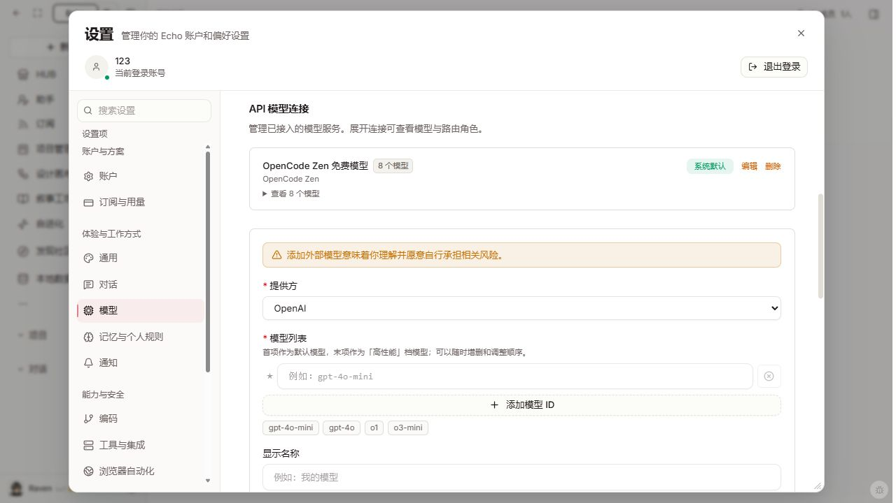
03-mobile-navigation-tabs
390px：增加全局导航，页签不再重叠，简化首屏说明。
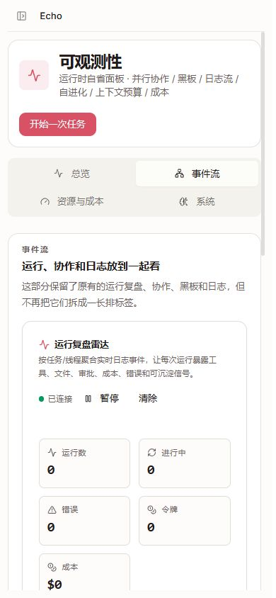
04-mobile-sidebar
新增导航可实际展开侧栏
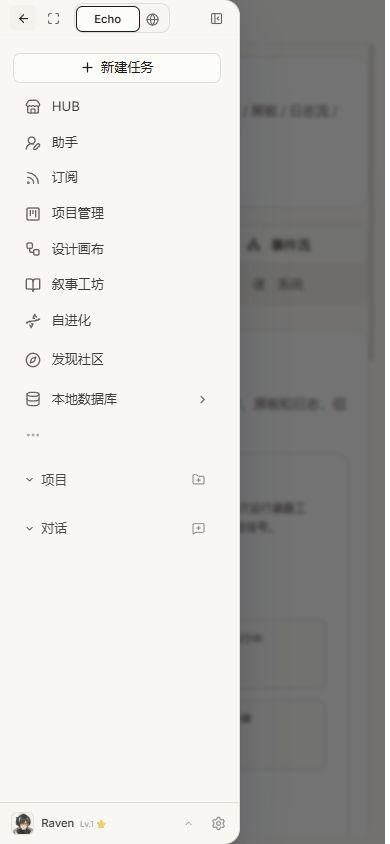
05-skill-detail
390px 技能详情完整可读，独立安装入口。
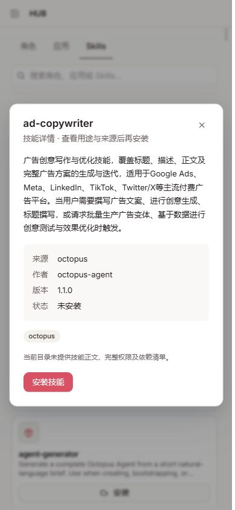
07-mermaid-final
节点文字已恢复，格式标签不再裸露。
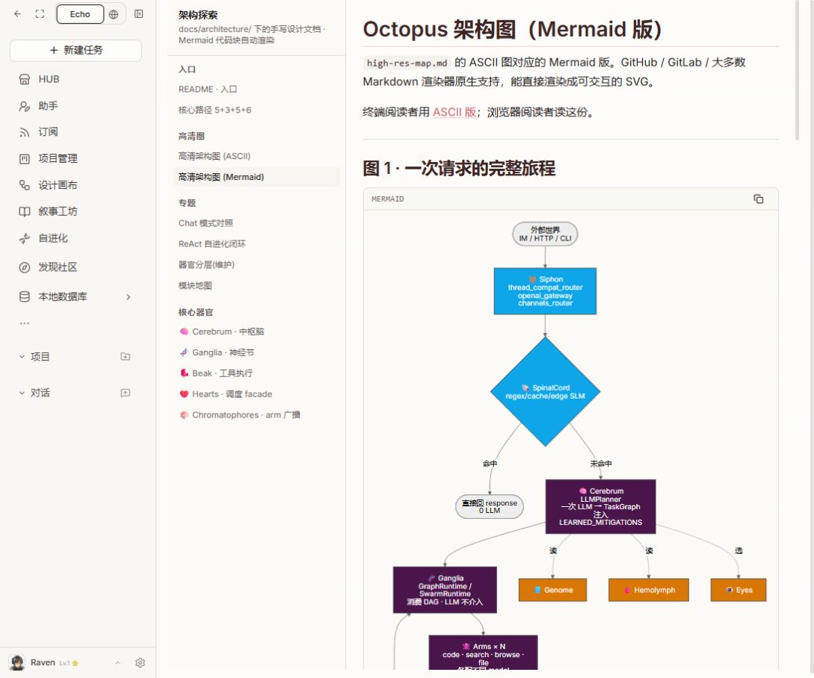
08-design-guide-updated
正式更新工作台后，使用指南可打开。
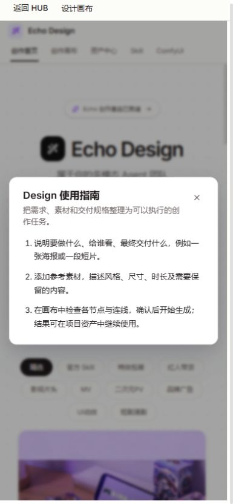
09-mobile-canvas-settings
390px 画布设置位于可视范围内。
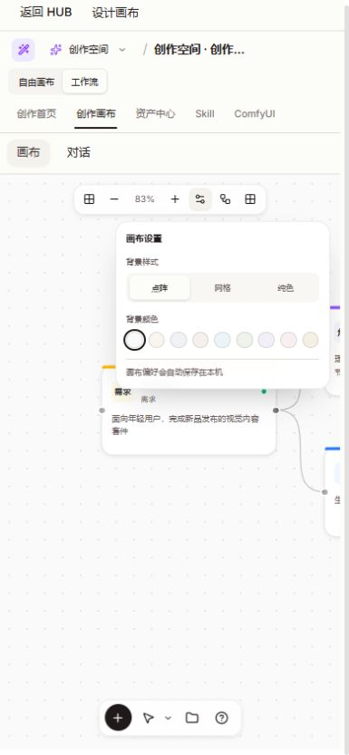
10-mobile-project-form
展开成员高级配置后，取消和创建按钮仍固定可见。
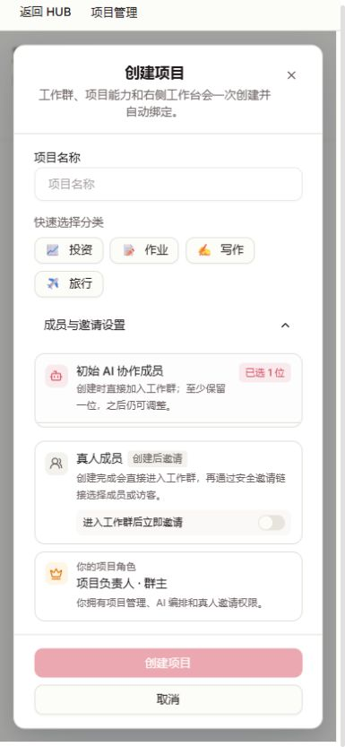
12-mobile-browser-settings
设置浮层适配手机宽度，搜索/编辑/主页/重置名称匹配操作。
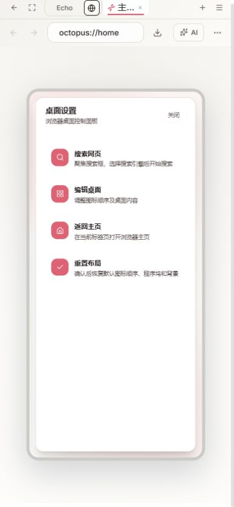
13-widget-catalog
添加小组件打开目录，没有直接新建默认组件。
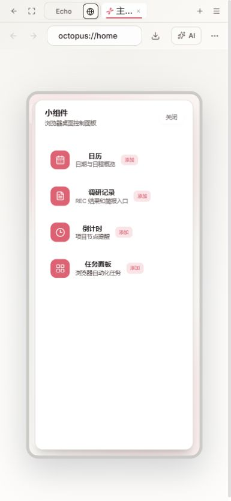
14-community-mobile-final
社区、集市、搜索和发布完整可见。
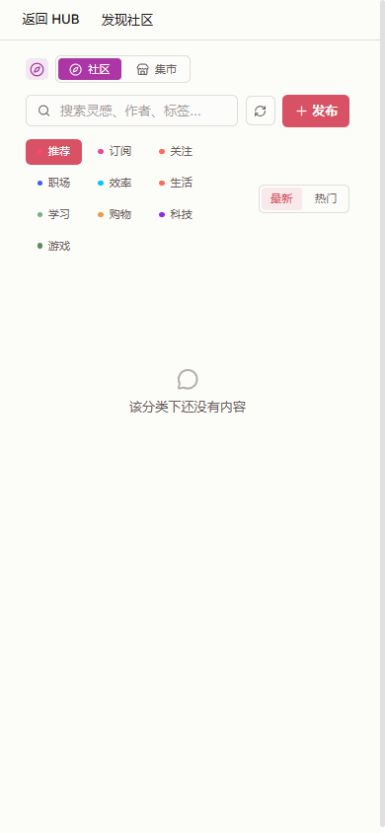
15-community-form
常驻字段名、分类选中状态和固定发布区；未提交。
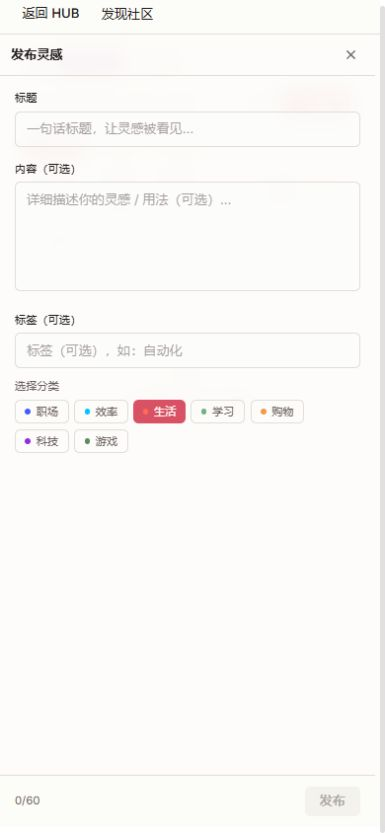
16-market-form
上架表单具有标题、用途、价格和分类标签；未提交。
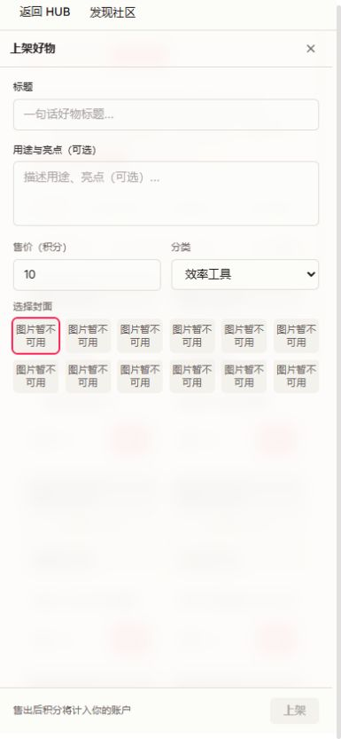
17-mobile-asset-form
资产名称、分类、描述与标签保持可见，创建操作固定在底部。
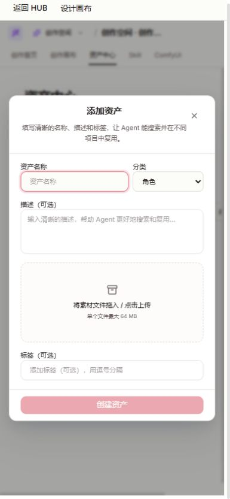
18-invalid-share
分享失效提供重试、返回工作区及折叠错误详情。
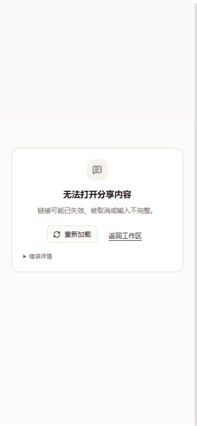
19-market-demo-notice
集市持续标注本地演示和未接入交付服务。
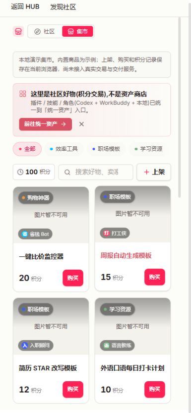